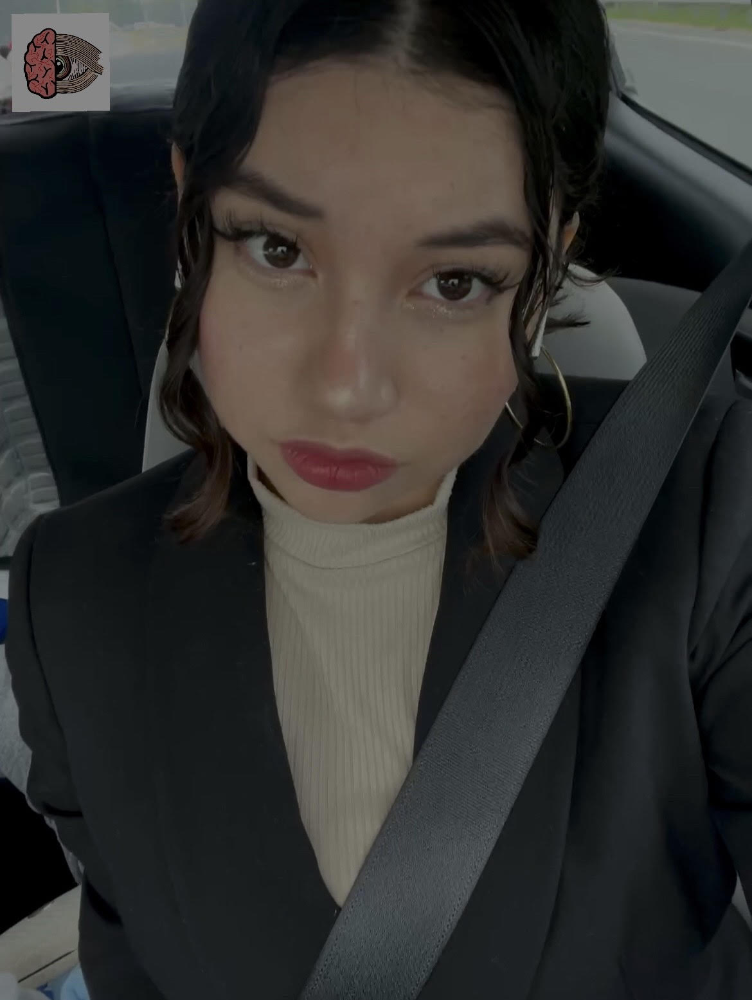

¿Quien soy yo?

Mi nombre es Laura Valentina Jaimes Tinoco soy nativa de Colombia, pero actualmente resido y estudio en Puerto rico, tengo 15 años y estoy en high School. Soy una persona exigente, metodica e ingeniosa. Me gusta hacer ejercicio, leer libros de neurociencia, psicologia, el funcionamiento del cerebro y temas espirituales por ello la explicación del tema de mi Website pero ¿Cual es el punto de mi Website?
Concientizar a las personas para que salgan del rol de victima y empiezen hacer la vida de sus sueños porque entienden que todo lo que les pasa e inconcientemente lo atrayeron con sus creencias sobre ellos mismos y sobre los demás. ¡Asi que te invito a tomar cartas en el asunto y cambiar tu vida por completo!